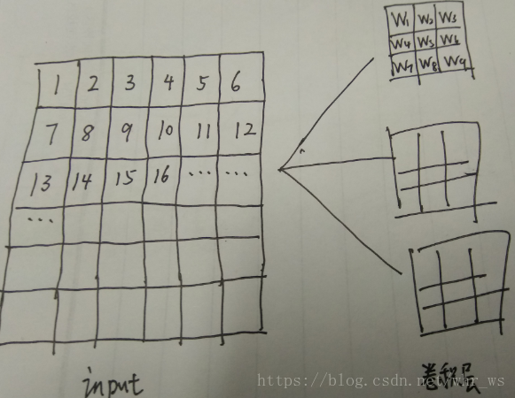

卷积神经网络（Convolutional Neural Network，CNN）是一种前馈神经网络，它的人工神经元可以响应一部分覆盖范围内的周围单元，对于大型图像处理有出色表现。 它包括卷积层(convolutional layer)和池化层(pooling layer)。
通常的神经网络是通过连接多层的神经元对输入的向量进行处理，数据和神经元是全连接的形式，通过样本的训练完成权值的训练而卷积神经网络是有卷积层 激励层 池化层 全连接层组成，首先卷积神经网络的提出是优化一般神经网络的训练效率，我们知道卷积神经网络在卷积层 激励层 池化层都并非全连接状态，所以训练的权值也相对减少，但是卷积神经网络要达到的效果是减少训练参数的数量但是不减少训练样本的质量。
对于卷积神经网络，每一个卷积核代表一种feature map的提取，例如是6*6的input，第一层卷积层由三个卷积核构成，主要是提取原input的三个特征，input与每个卷积核进行内积计算，这里设置stride为1，zero-padding为0，分别生成三个4*4的特征图矩阵。
这里的计算公式是（提取出的特征图中矩阵的维数=[（input的维数-卷积核的维数+2*zero-padding）/stride]+1 ）。
这里可以对比一般的神经网络，CNN一个厉害的地方就在于通过感受野和权值共享减少了神经网络需要训练的参数的个数，所谓权值共享就是同一个Feature Map中神经元权值共享，该Feature Map中的所有神经元使用同一个权值。因此参数个数与神经元的个数无关，只与卷积核的大小及Feature Map的个数相关。但是共有多少个连接个数就与神经元的个数相关了，神经元的个数也就是特征图中矩阵的大小。一个卷积核是由多个类似于一般神经网络中的神经元组成的，特征图的中矩阵元素的个数，即相当相应卷积核中的神经元个数，例如这里等价的每个卷积核神经元个数是4*4=16个，即每个卷积核就是由16个神经元组成，然后第一层总共有三个卷积核，所以第一层总共有16*3=48个神经元。
然后这些神经元是怎么与输入相连接的呢，我们考虑input中每一个滑窗区域矩阵，这里因为卷积核的维数是3*3，所以输入矩阵分割成16个3*3的滑窗矩阵，每一个滑窗矩阵总共九个元素，这九个元素连接到一个相同的神经元上面，神经元的输出也就是特征图中矩阵的第一个元素。如下图所示：

可以看出对于一个卷积核来说，每个神经元连接10个输入（加上偏置值），一个卷积核共有10*16个类似于神经元的连接，但是CNN在通过权值共享，每个卷积核的16个神经元的160个连接要训练的权值只有10个，这大大提高了训练的效率， 3个卷积核共有48个神经元，160*3=480个连接，10*3=30个参数训练。接着和一般神经网络一样通过样本结合SGD等算法来训练各个参数的值，以此来完成网络的训练。
这里可以看出卷积神经网络和一般神经网络的关系，卷积神经网络的激励层 池化层类似，也是可以排开成神经网络来看，区别主要是CNN是有权值共享和部分感受野以及不完全连接的特殊神经网络。